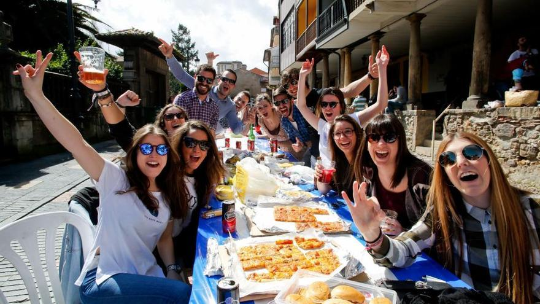

¡Saborea la Emoción! Llega el Concurso de Cocina 'Sabores del Pueblo'
por Maria Fernandez
En una explosión de sabor y creatividad culinaria, el esperado concurso de cocina "Sabores del Pueblo" está a punto de regresar para deleitar a los paladares locales con lo mejor de la gastronomía artesanal.
Desde los aromas tentadores que flotan en el aire hasta los sabores que hacen bailar a las papilas gustativas, este evento anual promete una experiencia inolvidable para los amantes de la cocina y los curiosos por igual. Con un menú que celebra la diversidad de sabores y técnicas culinarias, 'Sabores del Pueblo' invita a los participantes a explorar las tradiciones gastronómicas locales y a presentar platos que cautiven tanto el paladar como el corazón de nuestra comunidad.
Destacamos:
- Variedad de Categorías
- Desde platos tradicionales hasta creaciones modernas, el concurso ofrece una amplia gama de categorías para que los participantes muestren su talento culinario.
- Jurado Expertos
- Un panel de jueces compuesto por expertos en gastronomía evaluará cada plato en base a su sabor, presentación y originalidad.
- Premios Codiciados
- Los ganadores no solo recibirán emocionantes premios, sino también podrán pasar un buen rato con toda la comunidad local.
Únete a nosotros en 'Sabores del Pueblo', donde la pasión por la cocina se une con la diversidad gastronómica local para crear una experiencia verdaderamente deliciosa y memorable.
En el corazón de este vibrante concurso gastronómico se encuentra una pasión compartida por la cocina, donde los participantes tienen la oportunidad de presentar sus platos más creativos y deliciosos. Desde recetas transmitidas por generaciones hasta innovadoras fusiones de sabores, cada plato cuenta una historia única y refleja la diversidad de nuestra comunidad.